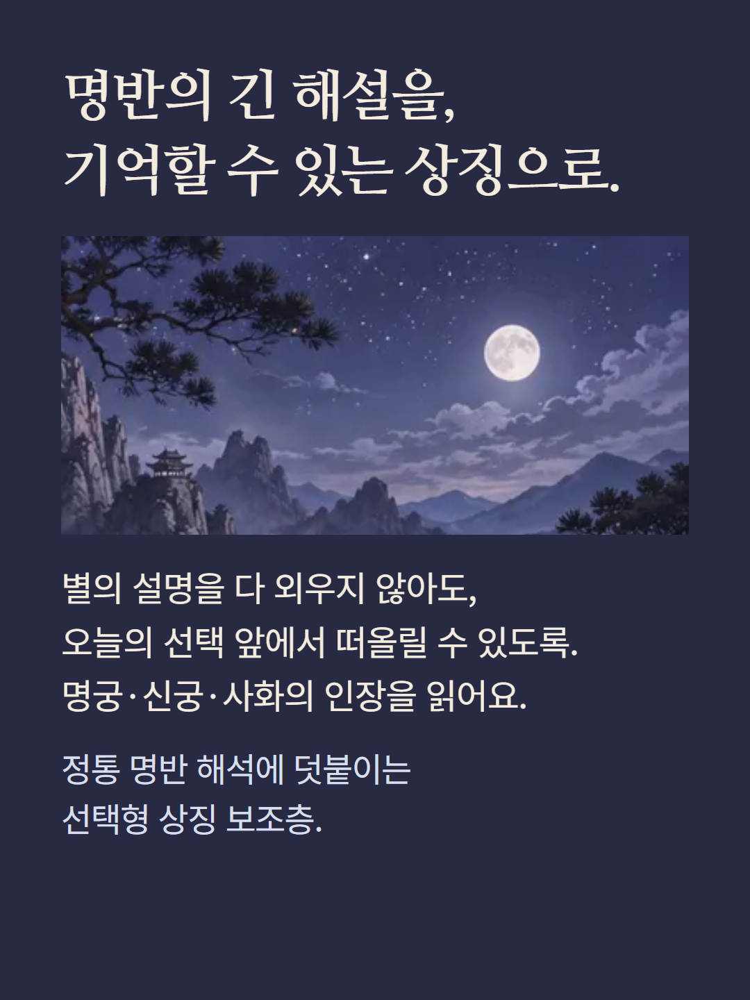
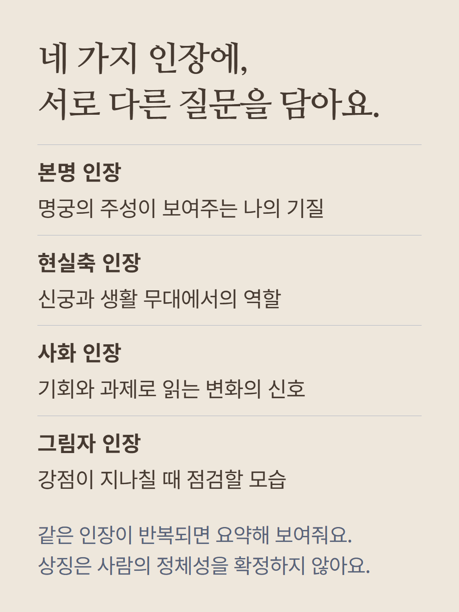
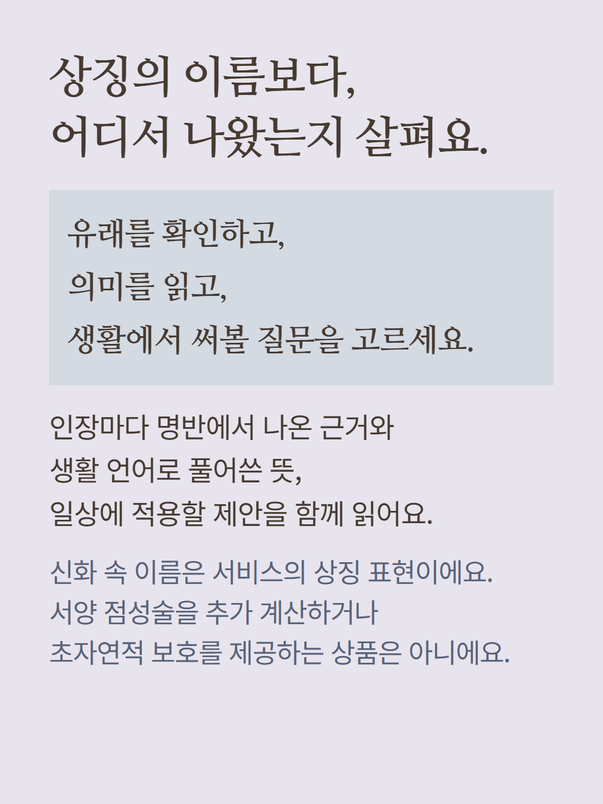
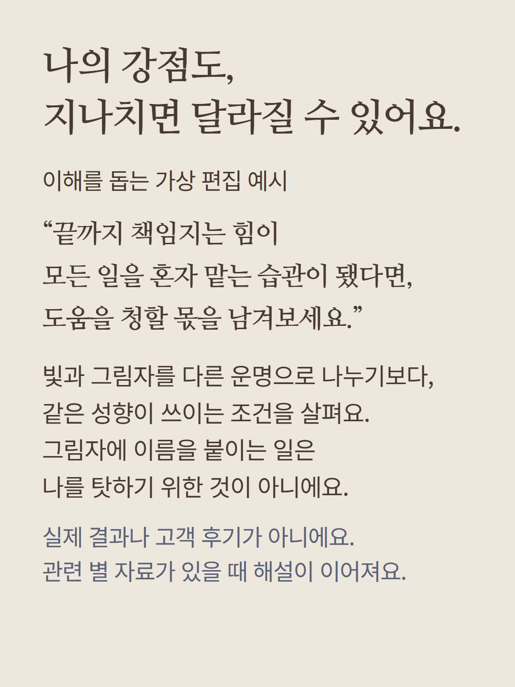
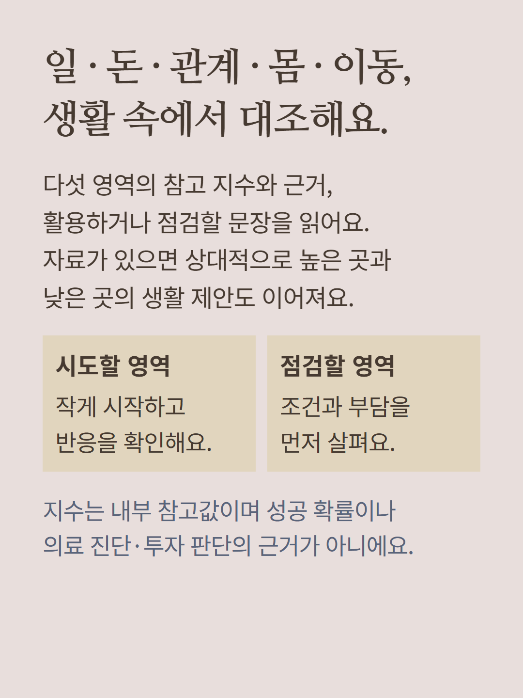
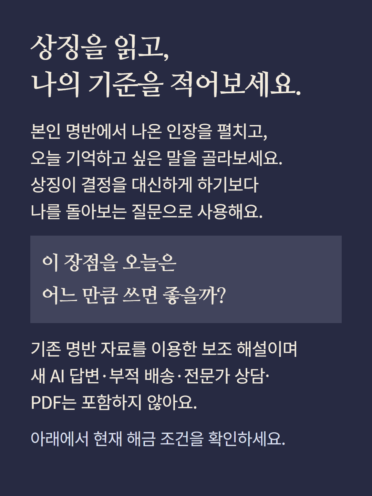

명궁·신궁/현실축·사화·그림자 자료를 상징 인장으로 풀어 읽는 선택형 보조 해설입니다. 인장 카드와 중복 요약,상징 변환 근거,재물·직업·관계·건강리듬·이동 다섯 영역의 내부 참고지수,인장별 유래·의미·활용,조건부 빛과 그림자·생활 적용 제안을 제공합니다. 자료에 따라 항목이 달라집니다. 신화 이름은 서비스의 상징 표현이며 서양 점성술이나 별도 점술의 계산,초자연적 보호,실물 부적을 제공하지 않습니다. 점수는 성공확률·의료진단·투자판단이 아니며 사람의 가치를 평가하지 않습니다. 기존 명반을 이용한 해석이며 새 AI답변·전문가상담·PDF는 별도입니다. 예시는 가상편집으로 실제결과·후기가 아니며 이미지는 분위기 연출입니다. 현재 해금 조건을 확인해 주세요.